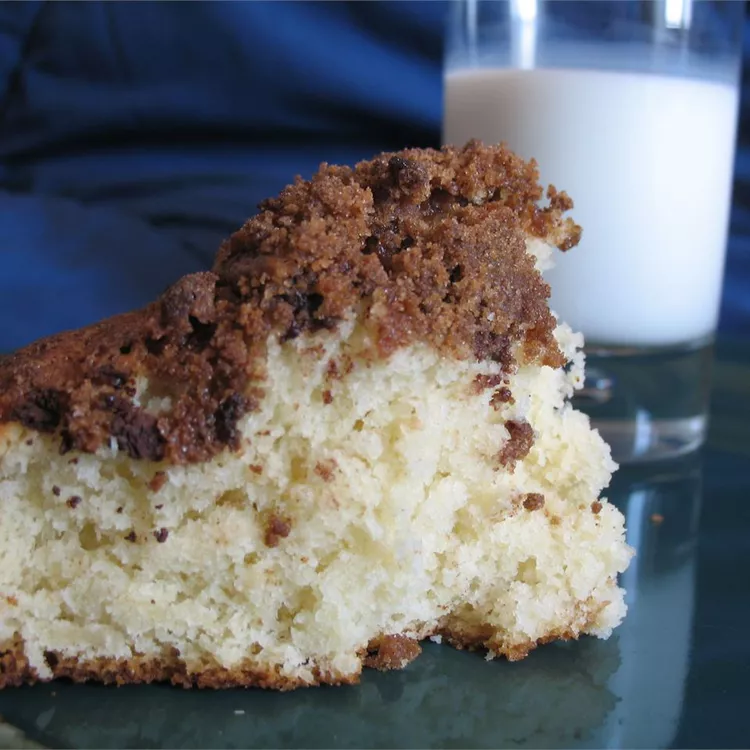

Quick Coffee Cake
Home

Description:
This coffee cake is wonderful, the cake itself it moist and delicious
while the topping is slightly crunchy and sweeter. Together, they make a
delightful combination that you will surely enjoy! This coffee cake has a
crunchy streusel topping of brown sugar and cinnamon, the perfect sweet
finish. Home cooks praise the quick prep and simple steps that require
just 30 minutes from prep to table.
Ingredients:
- 1 and a half cups all-purpose flour
- 1 and a half teaspoons baking powder
- 6 tablespoons white sugar
- half teaspoon salt
- half cup shortening
- half cup milk
- 1 egg
- half teaspoon vanilla extract
- 2 tablespoons butter, melted
- half cup brown sugar
- 2 tablespoons all-purpose flour
- half teaspoon ground cinnamon
Steps:
-
Preheat oven to 425 degrees F (220 degrees C). Grease and flour a 9 inch
square pan.
-
In a large bowl mix together the flour, baking powder, sugar and salt.
Cut in the shortening with a pastry blender to the size of small peas.
-
In a separate small bowl, beat the egg well, then stir in the milk and
vanilla. Add the egg-milk mixture to the flour mixture all at once. Stir
carefully until just blended.
-
Pour batter into prepared pan and spread evenly. Drizzle top with melted
butter.
-
In a small bowl mix together brown sugar, 2 tablespoons flour and 1/2
teaspoon cinnamon. Sprinkle on top of cake. Bake in the preheated oven
for 15 to 20 minutes, or until a toothpick inserted into the center of
the cake comes out clean.